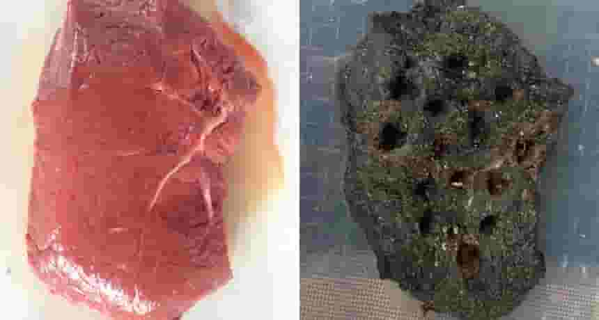

OCT 31, 2024
PAGES
- /missing
- /Forgotten.tech
- HTTP 404: The Void
══════════════════════════════════════════════════════════
*** WELCOME TO THE DIGITAL GRAVEYARD *** --- *** ALL FILES ARE CORRUPTED *** --- *** ENTER AT YOUR OWN RISK ***
ENTRY 4: FLESH ROT
you are rotting right now.
every second of every day.
cells dying. enzymes digesting you from the inside.
bacteria waiting for the signal.
the moment you die, the real work begins.
the body remembers how to fall apart
better than it ever remembered how to stay together.
first the color drains. then the smell comes.
then the insects do what insects do.
then you go back to the soil.
back to the elements.
back to nothing.
every living thing does this.
rot is not a bug. its the feature.
the only way anything gets recycled.
every second of every day.
cells dying. enzymes digesting you from the inside.
bacteria waiting for the signal.
the moment you die, the real work begins.
the body remembers how to fall apart
better than it ever remembered how to stay together.
first the color drains. then the smell comes.
then the insects do what insects do.
then you go back to the soil.
back to the elements.
back to nothing.
every living thing does this.
rot is not a bug. its the feature.
the only way anything gets recycled.
ENTRY 3: THE DE-REZZING
every time you copy a file, it loses something.
maybe not a lot. maybe nothing you can see.
but something.
a jpeg saved 80 times.
an mp3 transcoded too many generations deep.
a VHS tape dubbed from a dub of a dub.
the original is still there somewhere.
but you cant reach it anymore.
the signal is buried under noise.
the detail is gone.
what remains is a suggestion of what was.
thats rot too. not destruction,
but gradual, irreversible blurring.
maybe not a lot. maybe nothing you can see.
but something.
a jpeg saved 80 times.
an mp3 transcoded too many generations deep.
a VHS tape dubbed from a dub of a dub.
the original is still there somewhere.
but you cant reach it anymore.
the signal is buried under noise.
the detail is gone.
what remains is a suggestion of what was.
thats rot too. not destruction,
but gradual, irreversible blurring.

ENTRY 2: ROT IN GAMES
When a game rots, you can feel it.
textures load in wrong. sounds skip.
the framerate stutters in places it didnt used to.
a character model stretches into oblivion.
the game was fine once. it worked.
but code deteriorates. servers go down.
dependencies break. the world moves on
and the game stays frozen in time,
slowly falling apart.
not all rot is physical.
sometimes its just the memory of a game
that doesnt exist anymore.
and you cant go back because theres nothing to go back to.
textures load in wrong. sounds skip.
the framerate stutters in places it didnt used to.
a character model stretches into oblivion.
the game was fine once. it worked.
but code deteriorates. servers go down.
dependencies break. the world moves on
and the game stays frozen in time,
slowly falling apart.
not all rot is physical.
sometimes its just the memory of a game
that doesnt exist anymore.
and you cant go back because theres nothing to go back to.
ENTRY 1: WHAT IS ROT
What is rot?
The Oxford dictionary says: to decay, decompose,
fall apart. a verb. a noun. the process and the result.
but thats the sterile version.
rot is what the universe does to everything
you forget to look at.
digital rot is the same but crueler.
because by the time you notice,
the file is already gone.
the 1 already became a 0.
the face already became unrecognizable.
things falling apart in the dark
where nobody is watching.
The Oxford dictionary says: to decay, decompose,
fall apart. a verb. a noun. the process and the result.
but thats the sterile version.
rot is what the universe does to everything
you forget to look at.
digital rot is the same but crueler.
because by the time you notice,
the file is already gone.
the 1 already became a 0.
the face already became unrecognizable.
things falling apart in the dark
where nobody is watching.

.... - - .--. ... ---... -..-. -..-. .-- .-- .-- .-.-.- .... . .- ...- . -. ... --. .- - . .-.-.- -.-. --- -- -..-.
ENTRY DUMP // ALL RIGHTS RESERVED // NO WARRANTY // DATA MAY BE CORRUPTED
best viewed at 800x600 with Netscape Navigator 4.0
best viewed at 800x600 with Netscape Navigator 4.0